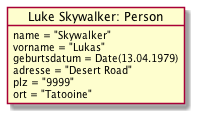
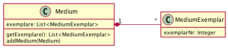
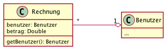

{% extends "../_base_template.html" %}
{% block title %}Lektion 20 - ORM{% endblock %}

{% block sections %}
<section data-markdown>
<textarea data-template>
<i class="fas fa-graduation-cap"></i> Objektrelationales Mapping (ORM)
=============================

Ziel
-----

* Sie wissen, was ORM - Objekt-Relationales Mapping - bedeutet
* Sie kennen Techniken, um objektorientierte Klassen als relationale Tabellen abzubilden
* Sie haben einen kleinen Einblick in ein ORM-Framework (Hibernate) erhalten
</textarea>
</section>

<section data-markdown>
<textarea data-template>
<i class="fas fa-graduation-cap"></i> Objektrelationales Mapping
=============================

In vielen Applikationen haben wir eine relationale Datenbank als Persistenzschicht. Unsere Objekte, unser Objektbaum wird also
schlussendlich in Tabellen gespeichert. Hier treffen allerdings 2 Welten aufeinander:

### Objektorientierte Sprache

<div style="display:flex; align-items:top">
    
    <ul>
        <li>Objekte kapseln Zustand (Daten) und Verhalten hinter einer Schnittstelle</li>
        <li>Objekte haben eine eindeutige Identität (im Speicher)</li>
        <li>Objekte stehen in Beziehung zueinander</li>
    </ul>
</div>

### Relationale Datenbank

<div style="display:flex; align-items:top">
    
    <ul>
        <li>Daten liegen tabellarisch vor</li>
        <li>basieren auf dem mathematischen Konzept der <a href="https://de.wikipedia.org/wiki/Relationale_Algebra">relationalen Algebra</a></li>
        <li>kennt keine Objektbeziehungen oder Vererbungen</li>
    </ul>
</div>

Sehen Sie die Problematik? Wir müssen also, um unsere Objekte persistieren zu können, zwischen zwei Welten "übersetzen".

Es gilt also, Konzepte zu finden, um die objektorientierten Paradigmen (Attribute, Beziehungen, Vererbung) in relationalen Paradigmen abzubilden (engl. "to map").
</textarea>
</section>


<section data-markdown>
<textarea data-template>
<i class="fas fa-graduation-cap"></i> ORM - Abbildung von Klassen und Attributen
=============================

Wir schauen uns als Erstes eine einzelne Klasse mit ihren Attributen an.

Frage an Sie: **Wie bilden wir eine Klasse in einer relationalen Tabelle ab?**

Schauen wir uns folgende BibSys-Klasse und ein Objekt an:
<div style="display: flex;align-items: top;">
    
    
<div>
    
* Was entspricht der **Klasse** in einer relationalen DB?
* Was entspricht den **Attributen** in einer relationalen DB?
* Was entspricht den **Datentypen** der Attribute?
* Was entspricht einem **Objekt** in einer relationalen DB?

</div>
</div>

<div class="fragment" style="display:flex; align-items:top">
    
    <div>

* die **Klasse** wird als **Tabelle** definiert
* jedes **Attribut** wird als eine **Spalte** der Tabelle definiert
* der **Datentyp** des Attributs entspricht dem **Spalten-Typen**
* ein **Objekt** entspricht einem **Datensatz** in der Tabelle

    </div>
</div>
</textarea>
</section>

<section>
<section data-markdown>
<textarea data-template>
<i class="fas fa-graduation-cap"></i> ORM - Abbildung von Beziehungen
=============================

Wie bilden wir aber **Beziehungen** zwischen Klassen in einer relationalen Datenbank ab?

Wir erinnern uns: Bei **objektorientierten Beziehungen** speichern wir
**einen Pointer auf ein anderes Objekt / auf eine Liste von Objekten**.

Das können wir mit (relationalen) Datenbank-Tabellen nicht! Wie lösen wir dieses Problem?

Wir erarbeiten anhand von konkreten Beispielen von Beziehungen eine Lösung in der relationalen Datenbank.

* Jede Gruppe erarbeitet die **relationalen Tabellen / Spalten** zur gezeigten Beziehung
* Zeichnen Sie die Tabellen mit den benötigen Spalten auf (z.B. in Excel kurz die Tabellen / Spalten eintragen)
* Erläutern Sie, wie die gezeigte objektorientierte Beziehung in der relationalen DB "funktioniert".
* Überlegen Sie sich das **SQL-Statement**, um die jeweils "andere Seite" zu laden: Wie holen sie den Benutzer zu einer Person mit SQL?

<div style="display: flex; align-items:top">
    <div>
        <div style="border:1px solid gray;padding:5px;height:180px">
            <strong>Has One (1:1):<br/>Zu einer Person gehört genau 1 Benutzer</strong><br />
            
        </div>
        <div style="border:1px solid gray;padding:5px;margin-top:5px;height:180px">
            <strong>Has Many (1:n):<br/>Ein Medium hat mehrere MediumExemplare</strong><br />
            
        </div>
    </div>
    <div style="margin-left:5px">
        <div style="border:1px solid gray;padding:5px;height:180px">
            <strong>Belongs To (n:1):<br/>Rechnungen gehören zu einem Benutzer</strong><br />
            
        </div>
        <div style="border:1px solid gray;padding:5px;margin-top:5px;height:180px">
            <strong>Has And Belongs To Many (n:m):<br/>Medium ist in mehreren Kategorien,<br/>und umgekehrt:</strong><br />
            
        </div>
    </div>
</div>
</textarea>
</section>

<section data-markdown>
<textarea data-template>
<i class="fas fa-graduation-cap"></i> ORM - Abbildung von Beziehungen
=============================

**Abbilden von 1:n-Beziehungen in relationalen Tabellen**

In der objektorienterten Sprache bilden wir 1:n-Beziehungen als Liste / Array von
Objekt-Pointern ab:


Hier hat das Objekt `Medium` eine Liste von `MediumExemplar`-Objekten zugewiesen: Auf dem Medium
haben wir somit ein Listen-Attribut.

Mit relationalen Tabellen können wir keine solche "Baumstruktur" aufbauen, wir müssen mit flachen
Tabellendaten arbeiten. Hier kehren wir die Beziehung um:

<div style="display:flex;align-items:top">


<div>

* Da wir in einer relationalen Tabelle keine Listen abbilden können, kehren wir die
  Verlinkung um:
* Wir zeigen von der **n**-Seite via ID auf die **1**-Seite (`medium_id`)
* ... und können dann die Daten entsprechend abfragen:

```
-- 1-Seite:
SELECT * FROM medium WHERE id = 5;
-- n-Seite: alle zugehörigen Exemplare:
SELECT * from medium_exemplar WHERE medium_id = 5;
```

</div>

</div>

</textarea>
</section>

<section data-markdown>
<textarea data-template>
<i class="fas fa-graduation-cap"></i> ORM - Abbildung von Beziehungen
=============================

**Abbilden von 1:1-Beziehungen in relationalen Tabellen**

1:1-Beziehungen können wir genau gleich wie 1:n-Beziehungen abbilden, mit einem kleinen "Trick":


Im Grundsatz ist auch diese Beziehung eine 1:n-Beziehung "mit Einschränkung": Es darf nur 1 Objekt
auf der n-Seite geben, welche auf unser 1-Objekt zeigt.

Wir bilden das in einer relationalen Datenbank mit einem **Unique Key** ab:

<div style="display:flex;align-items:top">


<div>

<i class="far fa-hand-point-left"></i> So kann es nur 1 Person geben, welche auf zB. die Person-ID 3 zeigt


</div>
</div>

</textarea>
</section>

<section data-markdown>
<textarea data-template>
<i class="fas fa-graduation-cap"></i> ORM - Abbildung von Beziehungen
=============================

**Abbilden von n:m-Beziehungen in relationalen Tabellen**

Die kompexeste Variante stellt die **n:m-Beziehung** dar, hier mit Assoziationsklasse (geht aber auch ohne):


Für die Abiildung als relationale Tabellen benötigen wir hier **immer** eine Zwischentabelle
(auch wenn wir im Objektmodell keine Assoziationstabelle haben):

<div style="display:flex;align-items:top">


<div>

* Da beide Seiten (Benutzer, Medium) jeweils eine Liste der anderen Objekte speichern müssen,
können wir keinen Foreign Key auf der einen oder anderen Tabelle definieren
* Dafür haben wir eine Zwischentabelle, welche jeweils **zwei Foreign Keys** definiert: einen zu `benutzer` und einen zweiten zu `medium`
* Zusätzlich können wir (falls notwendig) noch zusätzliche Attribute (hier: `am`-Datum) auf der Zwischentabelle definieren.

</div>
</div>

</textarea>
</section>
</section>

<section data-markdown>
<textarea data-template>
<i class="fas fa-flask"></i> Einschub: ORM mit Hibernate
=============================

In der Praxis machen Sie dieses _Objektrelationale Mapping_ nicht (mehr) selber:
Für sehr viele Programmiersprachen gibt es dazu bereits fertige, ausgereifte Frameworks,
die Ihnen diese Arbeit abnimmt:

* Laden von Datenbank-Einträgen und Aufbauen / Managen der In-Memory-Objekt-Struktur / Bäume
* Speichern von Objekten / Objekthierarchien in einer Datenbank

Für Java hat sich das Framework _**Hibernate**_ etabliert, mit welchem wir nun
ein wenig experimentieren werden.

<a href="https://hibernate.org/orm/">
    
</a>

**Achtung!** ORM-Frameworks sind meist **ziemlich komplexe Biester!** Sind Sie sich bewusst,
dass die Einführung eines ORM gut bedacht werden sollte.

<i class="far fa-hand-point-right"></i> Wir machen nun erste Schritte mit Hibernate ([separate Folien](./unterricht_praxis.html))

</textarea>
</section>
</section>

<section>
<section data-markdown>
<textarea data-template>
<i class="fas fa-graduation-cap"></i> ORM - Abbildung von Vererbungs-Hierarchien
=============================

Das Abbilden von Klassen, Attributen und Beziehungen in eine relationale Struktur ist
mehr oder weniger intuitiv: Für diese Konzepte gibt es eine fast gleiches Konzept auf der relationalen Ebene.

Anders sieht das aber bei **Vererbungs-Hierarchien** aus. Eine relationale Datenbank kennt keine Vererbungshierarchie.

Wie also bilden Sie folgende Struktur ab?


<i class="far fa-hand-point-right"></i> Finden Sie gemeinsam eine Lösung! Wie sieht Ihre Tabellenstruktur in der DB aus?<br />(Diskussion am Flipchart)

</textarea>
</section>

<section data-markdown>
<textarea data-template>
<i class="fas fa-graduation-cap"></i> ORM - Abbildung von Vererbungs-Hierarchien
=============================

Auch hier limitiert uns die relationale Struktur: Wir können mit relationalen, zweidimensionalen
Tabellen keine Vererbungsstruktur definieren. Wir müssen uns auch hier wieder behelfen:

Wir teilen die Daten auf verschiedene Tabellen auf. Dabei haben wir folgende Möglichkeiten:

**Variante 1: Einzelne Tabelle**

Alle Entitäten mit einer gemeinsamen Elternklasse werden in einer **einzigen** Tabelle
gespeichert - Mittels einer Typ-Spalte unterscheiden wir dann, um was es sich handelt:


So sind alle Objekte, welche von Medium erben, in einer Tabelle. Gewisse Spalten bleiben dann
je nach Typ leer (Bsp: Bücher haben keine EAN, kein Interpret).

Alle Bücher können mit SQL so folgendermassen abgeholt werden:
 
```SELECT * FROM medium WHERE obj_type = 'buch' AND id = 1;```

</textarea>
</section>

<section data-markdown>
<textarea data-template>
<i class="fas fa-graduation-cap"></i> ORM - Abbildung von Vererbungs-Hierarchien
=============================

**Variante 2: Tabelle pro Hierarchie-Ebene mit Joins**

Um keine unnützen Spalten führen zu müssen, können die einzelnen Hierarchie-Ebenen auch
separat in einer Tabelle abgebildet werden, und mittels eines Foreign Key auf der
unteren Ebene mit der Eltern-Ebene verknüpft werden:


Das Laden und Speichern einer ganzen Entität wird nun allerdings komplizierter, da nun immer
(mind.) 2 Tabellen bedient werden müssen. Zum Lesen können wir dafür einen Table Join` verwenden:

```SELECT m.*,b.* FROM buch b JOIN medium m ON b.parent_id = m.id WHERE b.id = 1```

</textarea>
</section>

<section data-markdown>
<textarea data-template>
<i class="fas fa-graduation-cap"></i> ORM - Abbildung von Vererbungs-Hierarchien
=============================

**Variante 3: Tabelle pro Klasse**

Als dritte Variante können Sie auch eine eigene Tabelle pro Klasse erstellen: So haben Sie nur die Spalten,
die Sie benötigen, und auch die Abfrage / Speicherung ist einfach.

Der Nachteil: Spalten, welche von der Parent-Klasse vererbt werden (z.B. 'Titel') sind in allen Tabellen
vorhanden.


Das Laden und Speichern einer ganzen Entität ist hier sehr einfach (Hier: Lesen):

```SELECT * FROM buch WHERE id = 1;```

</textarea>
</section>
</section>

{% endblock %}
